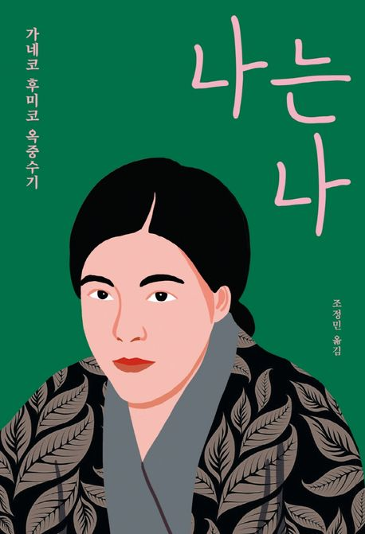

1923년 일본의 관동대지진 이후
일왕 및 황태자 암살 혐의로 체포된
독립운동가 박열과 그의 연인 가네코 후미코.
가네코 후미코는 예심 판사에게
재판에 도움이 될 수 있도록
자신의 일대기를 쓸 것을 명령 받는다.

“
유복한 가정에서 태어나지 않고
가는 곳마다 모든 환경 속에서
학대받을 만큼 학대 받은 나의 운명에 감사한다
운명적으로 불운한 탓에
나는 나 자신을 발견할 수 있었다.
그렇다. 나는 내 삶을 스스로 개척하고 스스로 창조해야 한다.
”
1903년 1월 25일 요코하마시 출생. 아버지 사에키 분이치와 어머니 가네코 기쿠노 사이에서 장녀로 태어났지만, 출생신고를 하지 않아 ‘무적자’로 살았다. 1912년, 당시 충청북도 부강에 살던 고모의 양녀가 되어 조선으로 건너가 약 7년간 생활한다. 이때 외할아버지 가네코 도미타로의 다섯째 딸로 입적한다. 1919년 4월 12일 조선을 떠나 일본으로 돌아온 후미코는 1920년 봄에 상경하여 신문팔이를 하면서 학업을 병행한다. 거리 연설에서, 학교에서, 일터에서 사회주의자들과 만난 것을 계기로 사회주의에 관심을 가지게 되었고, 특히 니힐리즘에 심취하였다. 잡지 『청년조선(青年朝鮮)』에 실린 박열의 시 「개새끼(犬コロ)」를 읽고 큰 감동을 받은 후미코는 1922년 4월경부터 박열과 동지로서 동거를 시작한다. 두 사람은 흑도회의 기관지 『흑도(黒涛)』 간행에 착수하여 1호와 2호를 발간하고, 흑도회가 해산한 이후에는 월간지 『후테이센징(太い鮮人)』을 발간한다. 1923년 4월에는 박열과 함께 ‘불령사(不逞社)’를 결성한다. 관동대지진 직후인 1923년 9월 3일, 후미코와 박열은 보호검속 명분으로 구속되고 10월 10일 치안경찰법 위반으로 기소된다. 1926년 3월 25일에는 사형선고를 받으며, 이후 무기징역으로 감형되지만 7월 23일 자살로 생을 마감하였다.